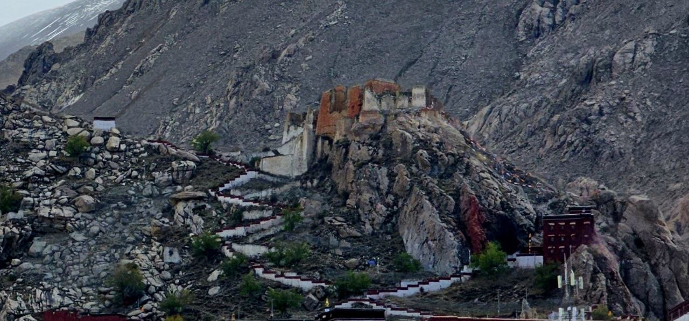
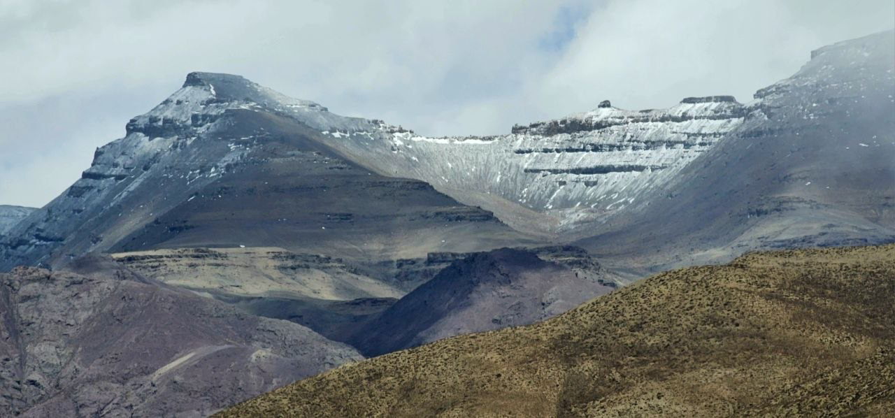
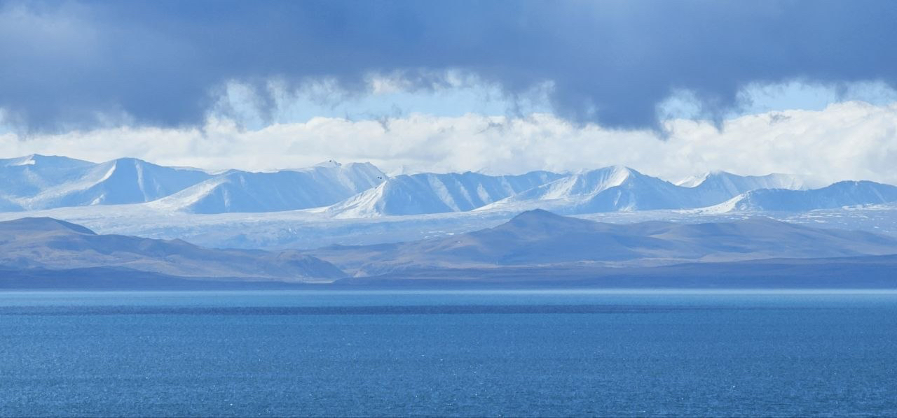
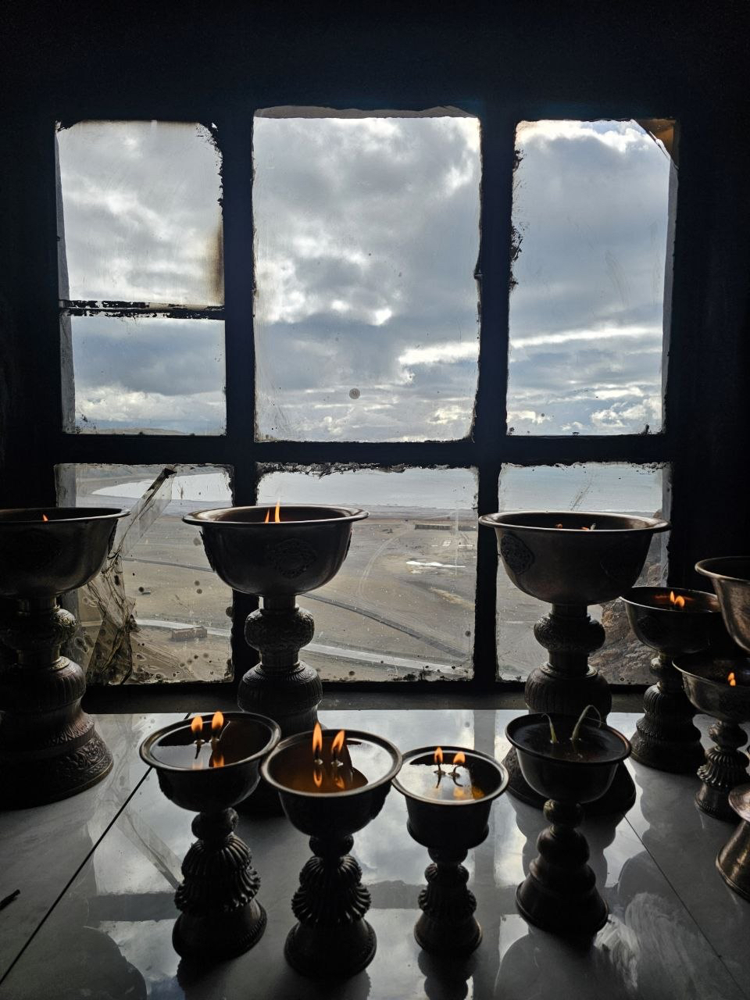
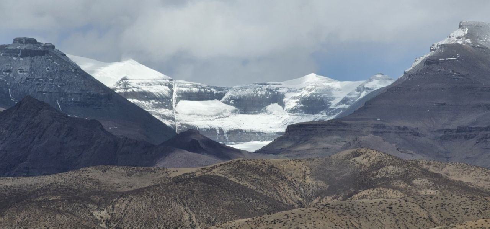
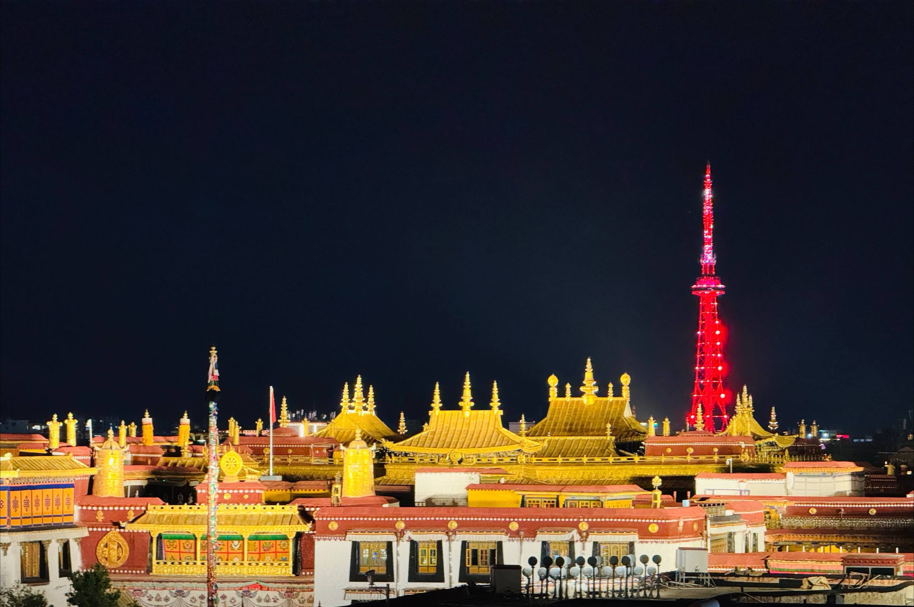
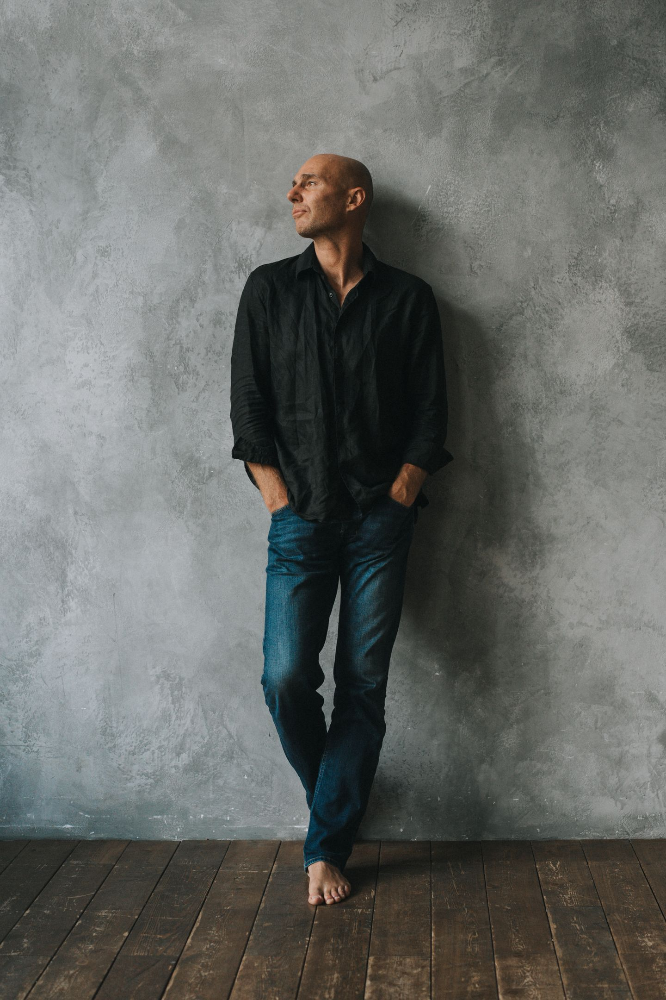

01 / ЖИВАЯ ТРАДИЦИЯМонастыри и храмы
Джокханг, Ташилунпо, Сакья. Знакомство с разными школами тибетского буддизма, храмовой жизнью и искусством, в котором каждый образ наполнен смыслом.

Путешествие вовне.
Путь к себе.
Монастыри, горы и тишина.
Паломничество к Кайласу с практиками медитации.
От монастырских дворов Лхасы — к открытым пространствам западного Тибета и священной горе Кайлас.
Мы отправляемся в паломничество: знакомиться с живой буддийской традицией, слушать истории мест, медитировать в монастырях и находить время для тишины.
Впереди — древние храмы, высокогорные озёра, затерянное царство Гуге и три дня пешего обхода Кайласа. Путь, в котором впечатления снаружи становятся поводом внимательнее посмотреть внутрь.
Культура, созерцание и большая дорога.
У каждого места — своя глубина.

01 / ЖИВАЯ ТРАДИЦИЯДжокханг, Ташилунпо, Сакья. Знакомство с разными школами тибетского буддизма, храмовой жизнью и искусством, в котором каждый образ наполнен смыслом.

02 / ПРОСТРАНСТВО ТИШИНЫМанасаровар, Ракшас-Тал и пещеры Драк Йерпа. Пространства, с которыми связаны истории паломников и мастеров созерцания. Время остановиться и побыть в тишине.
 03 / ПАЛОМНИЧЕСТВО
03 / ПАЛОМНИЧЕСТВОТрёхдневный пеший обход священной горы. Древний ритуал становится личным опытом: шаг за шагом, через усилие, внимание и встречу с собой.

В путешествии будут практики медитации — в монастырях и там, где само пространство приглашает замедлиться.
Мы оставляем место внимательному наблюдению, разговорам о практике и личному переживанию. Без необходимости испытать что-то «особенное».
Практики в монастырях проходят с учётом правил обителей, доступности помещений и текущей программы.
Снежные вершины, горные дороги и тишина монастырей — фотографии из путешествий организатора.




От Лхасы к Кайласу и обратно.
18 дней среди гор, озёр и монастырей.
Дни 1–6 · Лхаса, монастыри и Эверест
Перелёт Москва → Чэнду → Лхаса по исходной программе. Прибытие в аэропорт Гонггар, знакомство с городом и первые часы в высокогорье. Начинаем спокойно: даём себе время оказаться здесь.

Посещаем дворец Потала и храм Джокханг — одно из важнейших мест тибетского буддийского паломничества. Гуляем по Баркору, старому району вокруг храма, где повседневная жизнь города встречается с паломнической традицией.
Едем к монастырскому комплексу Драк Йерпа. Тибетская традиция связывает его пещеры с практикой Падмасамбхавы и других мастеров. Осматриваем обители и, если позволяют условия посещения, оставляем время для медитации.
Переезд из Лхасы в Шигадзе. Посещаем Ташилунпо — важный монастырь школы гелуг и традиционную резиденцию панчен-лам. Знакомимся с храмовыми дворами, архитектурой и буддийским искусством.
Посещаем Сакья — монастырь, давший имя одной из главных школ тибетского буддизма. За строгой архитектурой раскрывается история учения и искусства. Продолжаем дорогу в Ладзе.
Выезд из Ладзе в район северного базового лагеря Эвереста и монастыря Ронгбук. Большое пространство гор, снежные вершины и монастырь среди сурового высокогорного ландшафта. Доступ к отдельным точкам зависит от действующих разрешений.
Дни 7–11 · Западный Тибет
Длинный переезд Ладзе → Сага → Парьянг. За окнами сменяются широкие долины и горные хребты. Эта дорога соединяет центральный Тибет с паломническими путями к Кайласу.
Переезд к Манасаровару. Посещаем монастыри Чиу и Госсул, знакомимся с паломническими традициями озера. Затем — Ракшас-Тал и дорога в Дарчен, к подножию Кайласа.
Едем из Дарчена в Тхолинг через район Занда. Эрозия превратила местные породы в причудливые стены, башни и ущелья — огромный природный лабиринт между горными системами.
Выезд в Цапаранг — древнюю столицу Гуге. Руины, пещерные пространства и уцелевшее храмовое искусство рассказывают о времени, когда западный Тибет был местом встречи культур и буддийских традиций.
Из Тхолинга направляемся к Тиртхапури и в долину Гаруды. Знакомимся с местными священными ландшафтами и историями паломничества. Возвращаемся в Дарчен перед началом пешего обхода.
Дни 12–14 · Шаг за шагом
Начинаем кору — ритуальный обход горы. В программе монастыри Чуку Гомпа и Дрира Пхук. Дорога постепенно раскрывает северную сторону Кайласа, а привычный ритм сменяется простым движением: шаг, дыхание, внимание.
Самый сложный день коры: переход через перевал Дрома-Ла, примерно 5 600 метров по программе. На спуске открывается вид на озеро Гаури-Кунд. Затем продолжаем путь к монастырю Зутур Пхук.
В паломнической традиции перевал связан с образом Тары и символикой обновления. Для каждого участника это прежде всего реальный высокогорный переход, требующий сил и внимания к своему состоянию.
Можно вернуться по земле, как в основном маршруте ниже, или выбрать более короткий перелёт с дополнительным днём в Лхасе.
После завершения коры остаёмся на ночь в Дарчене. На следующий день едем в аэропорт Пуранг и летим в Лхасу, если расписание позволяет.
Возвращение в Дарчен. Спокойный вечер и ночь там же.
Трансфер в аэропорт Али Пуранг (APJ), перелёт в Лхасу и ночь в городе.
Свободное время после возвращения с Кайласа.
Ещё один свободный день, затем вылет из Лхасы по общей программе.
Перелёт через Пуранг — планируемый вариант. Рейсы на август 2027 года и места для группы подтверждаются перед бронированием. Если подходящего рейса не будет, обсудим другой способ возвращения.
Завершаем пеший обход и возвращаемся в Дарчен. После коры — переезд в Парьянг. Появляется время почувствовать пройденный путь и постепенно вернуться к дорожному ритму.
Дни 15–18 · Обратная дорога
Возвращаемся через тибетское плато в Ладзе. День в дороге, знакомые пейзажи и возможность спокойно осмыслить пережитое.
Переезд в Лхасу. Завершаем большую автомобильную часть маршрута и возвращаемся в город, с которого началось путешествие.
День без общей экскурсионной программы. Можно ещё раз пройти знакомыми улицами, выбрать памятные вещи или просто отдохнуть и побыть наедине со своими впечатлениями.
Завершение программы в Тибете. Вылет из Лхасы и дорога домой.
Поездка запланирована на 12–30 августа 2027. В исходном маршруте — 18 программных дней; распределение перелётов и дополнительного календарного дня уточняется. Порядок посещений может меняться с учётом погоды, разрешений и состояния группы.

Горы снаружи.
Пространство внутри.
Практика, горный опыт
и внимание к организации.

Основатель образовательного проекта Neuro-Universe, преподаватель йоги и медитации. Преподаёт с 2000 года, ведёт семинары и ретриты в России и за рубежом. В его подходе знания о работе мозга встречаются с созерцательными практиками; поездки в буддийские монастыри стали важной частью его собственного пути.
В этом путешествии Леонид будет проводить практики медитации и помогать глубже познакомиться с традициями тибетского буддизма.
О Леониде в Neuro-Universe ↗Основатель Eversummit Club, организатор экспедиций. Опыт высотных и технических восхождений в России, Центральной Азии, Непале и Пакистане. В её горной истории — Эверест и Манаслу.
Eversummit Club ↗Организатор этого путешествия и ваш контакт перед поездкой. С Андреем можно обсудить маршрут, участие и организационные вопросы.
Написать Андрею ↗12–30 августа 2027
Тибет · Лхаса · Кайлас
Напишите Андрею, чтобы обсудить участие, подготовку и все детали путешествия.
Обсудить участие Telegram · @vsemayaПри отказе от путешествия не позднее чем за два месяца до начала.
Состав включённых услуг и дополнительные расходы уточняются. Получите полный перечень у организатора до внесения предоплаты.
Главный смысл — знакомство со священными местами Тибета и медитативная практика. Большая часть маршрута связана с переездами и посещением монастырей. При этом трёхдневная кора — полноценный пеший путь в высокогорье с перевалом около 5 600 м. Восхождение на вершину Кайласа в программу не входит.
Интерес к практике и уважение к традиции важнее желания получить определённое переживание. Свой опыт и ожидания можно заранее обсудить с организаторами, чтобы понять формат совместных практик.
В программе есть продолжительные переезды, несколько дней выше 4 000 м, ночёвки в гестхаусах на коре и сложный переход через перевал. Физическую подготовку и возможность участия необходимо обсудить заранее. Высокогорный характер маршрута остаётся важным условием даже при паломническом формате поездки.
Полный состав стоимости пока уточняется. Перед бронированием Андрей предоставит перечень включённых услуг и отдельных расходов, в том числе условия по перелётам, размещению, питанию, разрешениям и сопровождению.
Да, запланирован вариант с перелётом из аэропорта Пуранг в Лхасу за дополнительные 500 €. После коры — ночь в Дарчене, затем трансфер и перелёт. Так в Лхасе появится ещё один день. Рейс и места на август 2027 года подтвердим перед бронированием.
Напишите Андрею в Telegram. Обсудите маршрут и условия, затем внесите предоплату 2 000 €. Доплата — на месте. Для первых пяти участников полная стоимость составляет 3 900 €, для следующих — 4 500 €.
При отмене не позднее чем за два месяца до начала путешествия предоплата возвращается полностью. Условия более поздней отмены уточняются у организатора до бронирования.